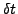
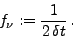

The keyword ufreq allows to determine the upper limit of the frequency interval to be considered.
An alternative method is the automatic determination of this limit by means of the Nyquist Coefficient (keyword nycoef). For equidistantly sampled time series with sampling interval width , there is a uniquely defined Nyquist Frequency
|  | (5) |
Additional information is available by setting the keyword nyscan in the .ini file. If this keyword is specified, SIGSPEC creates a file nyscan.dat in the project directory containing the Nyquist Coefficients over the specified frequency range.
Example. The sample project limits illustrates the use of the keyword ufreq. The line
ufreq 5
in the file limits.ini restricts all computations performed by SIGSPEC to frequencies below 5 cycles per day. The spectrum limits/s000000.dat (sig and amplitude) is displayed in Fig.7. A comparison with the screen output in Example SigSpecNative, p. , where no restrictions to the frequency range apply, shows that the screen output in this example contains one line less:
, where no restrictions to the frequency range apply, shows that the screen output in this example contains one line less:
1 freq 3.13205 sig 9.54539 rms 0.00449592 csig 9.54539
2 freq 3.98471 sig 7.43085 rms 0.00422861 csig 7.42753
3 freq 2.664 sig 4.60182 rms 0.0040257 csig 4.60117
The signal component at 5.4 cycles per day is not detected, because it is outside the specified frequency range.
Example. The sample project nyos illustrates the use of the keywords nycoef and nyscan for the V photometry of IC4996#89. The line
nycoef 0.99
in the file nyos.ini provides an upper frequency limit of 110.77 cycles per day. The keyword nyscan is given, and the file nyos/nyscan.dat contains the Nyquist Coefficients for frequencies from 0 to 110.77 cycles per day, as displayed in Fig.8.


Next: Frequency spacing and oversampling
Up: Input
Previous: Lower frequency limit
Contents
Piet Reegen
2009-09-23